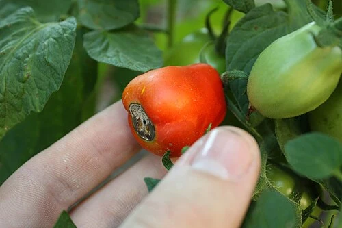

番茄幼果底部发黑、变硬
第一穗幼果若从花痕处开始发黑，可结合斑块位置与近期浇水情况，判断是否符合脐腐。

观察特征
轻轻翻看还挂在枝上的幼果。果梗正对面的浅褐色平斑会随果实膨大而下陷、变黑。
辨别线索
对比第一穗的几枚果实。脐腐的硬斑始于花痕；朝阳面的果肩出现白斑，要考虑日灼。
处理方法
浇水前摸一摸表层以下的土。土壤忽干忽湿或根系受损，即使土中钙足够，幼果也可能缺钙。保持水分平稳，浇后覆盖土面。
后续复查
摘掉严重受损的果实，检查下一穗。原有斑块无法愈合。水分稳定后仍持续出现时，可先测土，再决定是否需要补充养分。
用哪一穗判断改善？
今天标记一枚尚无斑点的小番茄。若它和更小的幼果持续正常膨大，而老黑斑只是变干，就用新果评价浇水调整的效果。盆栽还要摸根团内部，只摸表土容易误判。
不仅看浇水次数，也看排水。盆栽若套在封闭外盆里，即使表土发干，内部仍可能长期饱水。见果底黑斑时，应先排除积水，而非一律增加浇水。